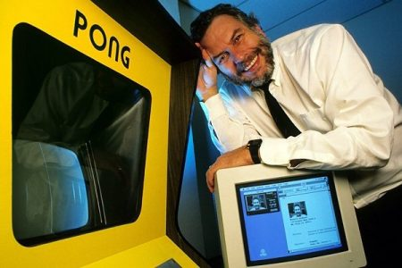

Nolan Bushnell

As co-founder of Atari, Nolan Bushnell helped bring the popular video game Pong to life.
Timeline of Bushnell's life:
- 1943 - Born in Clearfield, Utah, United States
- 1961 - Enrolls at Utah State University to study engineering and business
- 1964 - Transfers to University of Utah College of Engineering and graduates with a Bachelor's degree in electrical engineering
- 1969 - Co-founds video game company Syzygy with colleague Ted Dabney
- 1972 - Syzygy becomes Atari and Bushnell buys Dabney out of the company
- 1977 - Sells Atari to Warner Communications for $28 million and founds restaurant chain Chuck E. Cheese's
- 1978 - Forced out of Atari after a dispute with Warner Communcations
- 1981 - Founds one of the first technology company incubators, Catalyst Technologies
- 1984 - Resigns from his position at Chuck E. Cheese's
- 1996 - Becomes senior consultant to small game developer Aristo International
- 2000 - Founds digital entertainment company uWink
- 2012 - Founds company BrainRush, which combines video game technology and educational software
- 2019 - Appointed CEO and Chaiman of Global Gaming Technologies Corp.